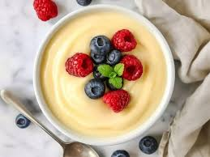

Vanilla Custard (Detailed)
Ingredients
- Full-cream milk 2 cups
- Vanilla custard powder 2 tablespoons
- Sugar 2 to 3 tablespoons (adjust to taste)
Step-by-Step Method
- Make custard paste
- Take ½ cup cold milk in a bowl.
- Add custard powder and mix well until smooth.
- 👉 Make sure there are no lumps (this is important).
- boil milk
- Pour the remaining 1½ cups milk into a pan.
- Heat on medium flame and bring it to a boil.
- Stir occasionally so it doesn’t stick.
- Add sugar
- Add sugar to the boiling milk.
- Stir until completely dissolved.
- Thicken custard
- Lower the flame.
- slowly pour the custard mixture into the milk while stirring continuously.
- Cook for 2–3 minutes until it thickens.
- cool & serve
- Turn off the heat.
- Let it cool slightly before serving.
✨ Tip: Custard thickens more as it cools. Add fruits only after cooling.
